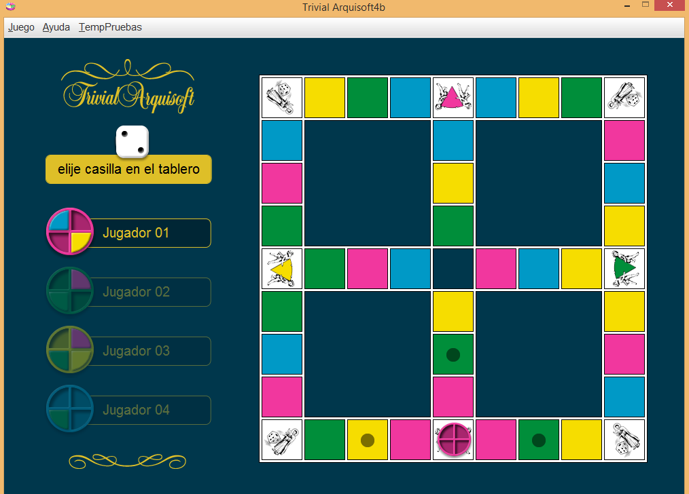
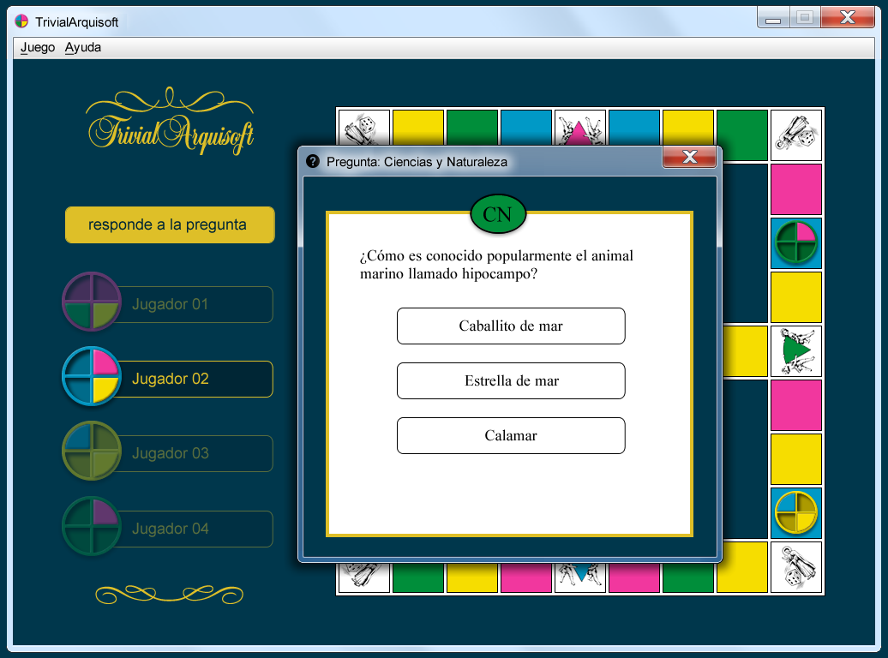

El jugador que tiene el turno activo deberá de realizar su tirada, por lo que dispone de un botón situado en la parte izquierda para efectuar dicha acción. Una vez hecha la tirada, el dado generará un número aleatorio del uno, al seis, esto indicará al jugador cuantas casillas debe moverse.
El jugador podrá seleccionar moverse a cualquiera de las casillas marcadas con un punto negro encima. Para realizar el movimiento, será suficiente con hacer un click sobre ella, y automáticamente el sistema lanzará una pregunta acorde a la categoría de la casilla
El jugador deberá elegir entre las diferentes posibilidades cuál cree que es la respuesta correcta a la pregunta que se le plantea. Llegado a este punto, se plantean dos opciones posibles:
El juego finaliza cuando alguno de los jugadores consigue los cuatro quesitos. Para conseguir dichos quesitos será necesario contestar correctamente las preguntas ubicadas en las posiciones especiales del tablero.